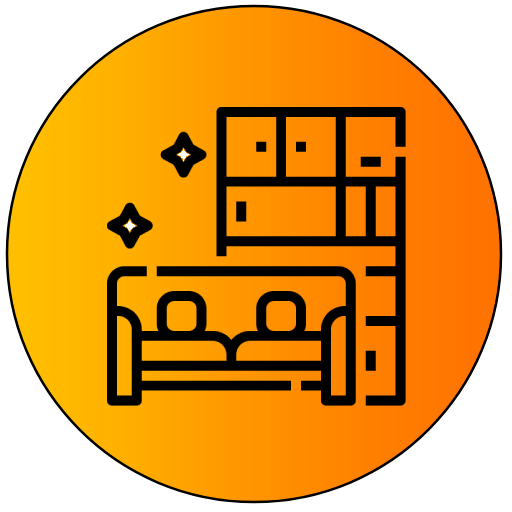

<ion-content [fullscreen]="true">
  <ion-row *ngIf="spinnerMostrandose" class="contenedor-spinner">
    <ion-col>
      <ion-spinner name="circular" class="spinner" color="light"></ion-spinner>
      
    </ion-col>
  </ion-row>

  <ion-card class="card-grafico-cosas-lindas">
    <ion-card-title>Gráfico de torta - Usuarios con Fotos lindas más gustadas</ion-card-title>

    <ion-card-content>
      <canvas #pieCanvas></canvas>
    </ion-card-content>
  </ion-card>
  
  
  <ion-card class="card-grafico-cosas-feas">
    <ion-card-title>Gráfico de barras - Usuarios con Fotos feas más gustadas</ion-card-title>
    
    <ion-card-content>
      <canvas #barCanvas></canvas>
    </ion-card-content>
  </ion-card>
</ion-content>

<ion-fab class="fab-volver" vertical="bottom" horizontal="start" slot="fixed" routerLink="/home" *ngIf="!this.spinnerMostrandose">
  <ion-fab-button color="light">
    <ion-icon name="arrow-back-circle"></ion-icon>
  </ion-fab-button>
</ion-fab>